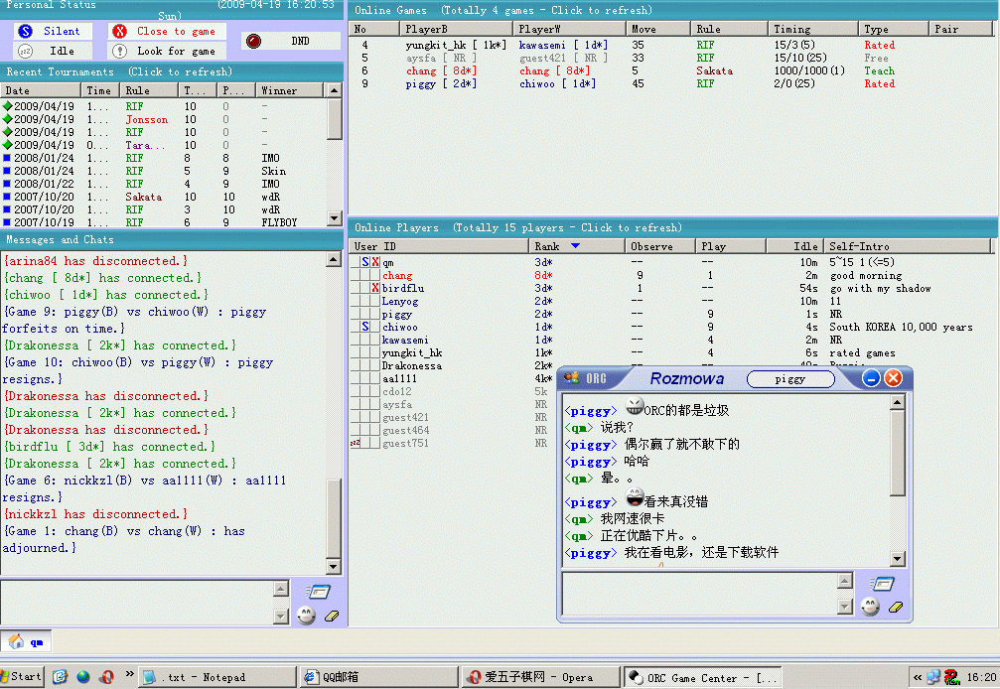
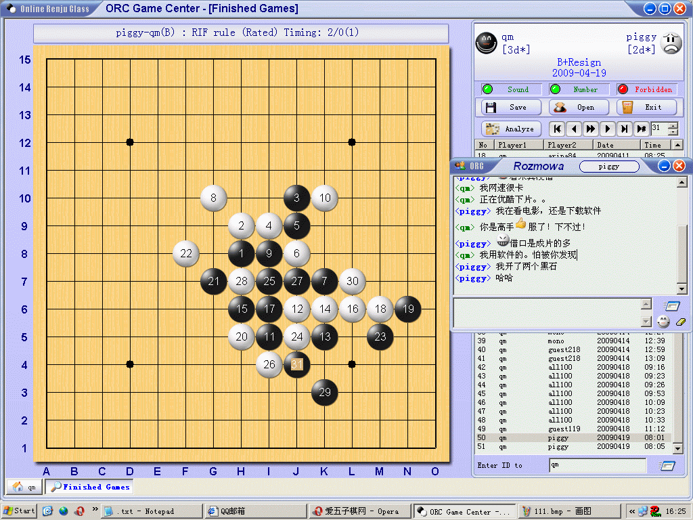
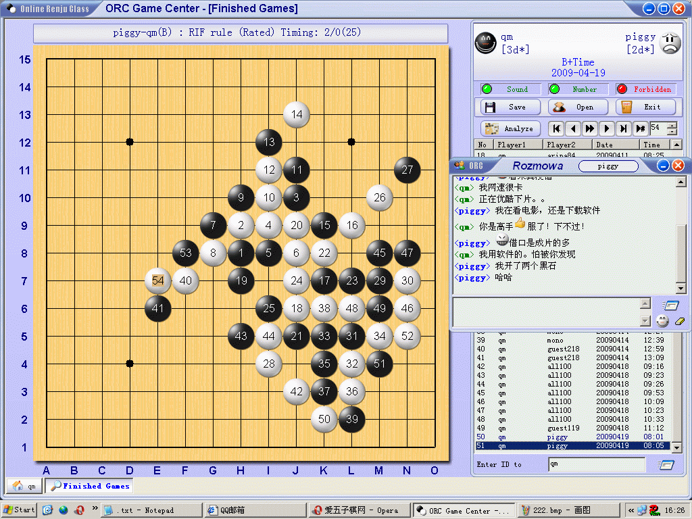

咱这里正好有篇说QQ的，我再续貂一篇ORC的。 本来我不想发这种牢骚一样的文章，不过真的对最近一些事，太莫明其妙了！
我一般都在ORC下棋的，虽然网速慢，问了xiaosa大哥说最近服务器老出问题，最近光资料回档都两次了吧。不过我还是很热爱ORC，至少这里比Q三安静，少了许多是非。
先介绍一下本人，启蒙也是我的真名，ORC上ID：qm 在ORC喜欢下快棋，本人水平很有限，爱棋之心是火热的，我最近见过几次了，有人在大厅用英文骂人，也懒得向人说了，更有慎者，当面说人用软件，还骂人，这就太过分了吧！
4月19号，下午，也就是今天下午，我乘着周日下几盘棋，看个优酷小电影。。很有悠闲。和一个叫piggy的朋友下，2分钟的快棋。ORC的网很卡，第一盘我控制局面，很快就胜了，第二盘局面有点乱，再加上那边走着片有点卡，虽然我靠时间侥幸赢了下来，不过我不想再下2分钟了，毕竟纯粹靠时间输赢都没意思。于是我点了“close to game”。没想到。。立刻招来。。以下是截图！



哎。。真的，现在在网上下棋有这么难嘛？大家看看这两盘棋，2分钟的快棋我不知道怎么去用软件
而且用了软件就能赢？哎。不想再说什么了，我不怪他说我软件，只是你不该骂人啊？
挺PF大鱼，有志，小刀等LS的境界的，看看在百度棋吧里的指责漫骂，平时在Q三里经常有人用各种方法来侮辱小刀LS。。也不知道LS们都是怎么挺过来的，心态真好！
这个叫piggy的朋友，如果你也上iwzq的话，不妨大方上来解释一下，怎么看出来我用软件的？为什么要先骂人呢？
［此帖子已被 启蒙 在 2009-4-19 16:35:45 编辑过］
［ 岳麓小棋后 于 2009-4-19 16:45:02 时花20金币送鲜花一朵］
［ 茗弈小刀 于 2009-4-19 16:55:09 时奖励此帖[金币加 20 威望加1］
［此帖子已被 有志青年 在 2009-4-20 9:08:03 编辑过］
［此帖子已被 茗弈小刀 在 2009-4-22 18:46:59 编辑过］
刚才用opera传的图，不知道可能不是IE核心传不了吧，现在重新编辑了一下，可以看到了
有点后悔，不该发出来的，这种事，相信大家不少都遇到过，可能是自己的心态不好，没必要和这种人较劲！

qm和piggy都见过……我以前在ORC下到5d*，不过还要开外网，网络又不稳定，渐渐地就回归QQ了。
有一种思路是这样的：“因为觉得对手和自己旗鼓相当，再下下去耗费太大精力，又不一定能赢，所以就不下了。”其实是对对手的赞许。
屏蔽LS的话一直都是很中肯的。自己有时候心态调整的并不是很好，听大家的，少些事非，静心研棋！
我发出来给大家看看，也是一种自己鞭策，祝以上回帖的朋友们涨棋哈！自己也加油！